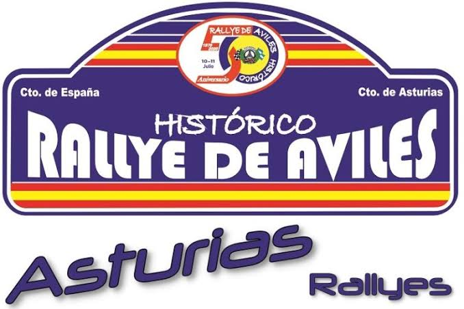
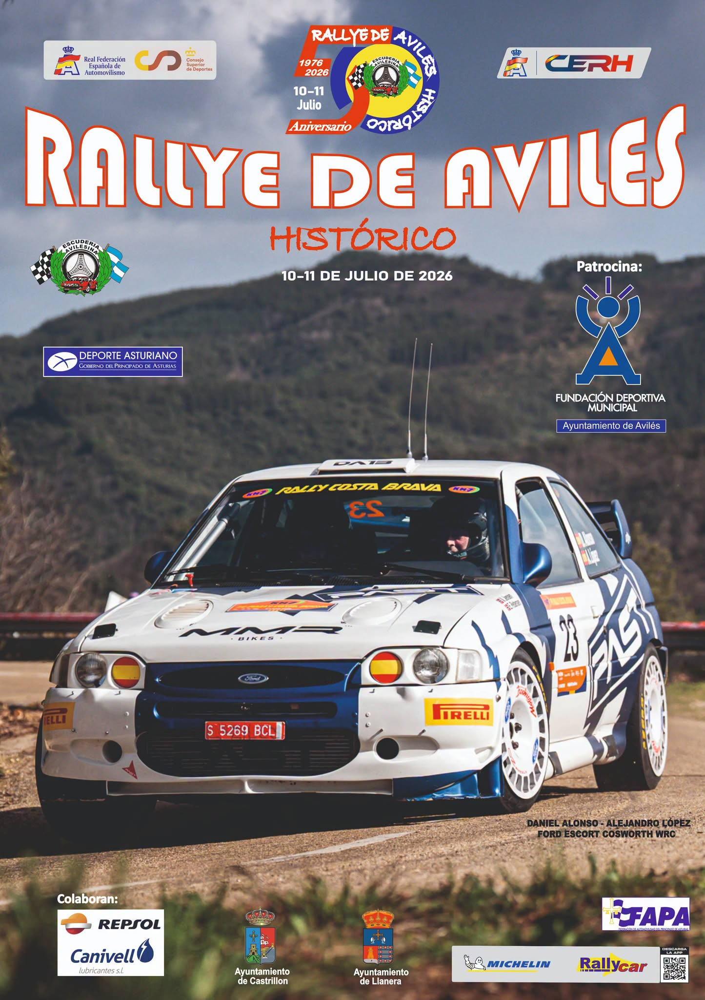
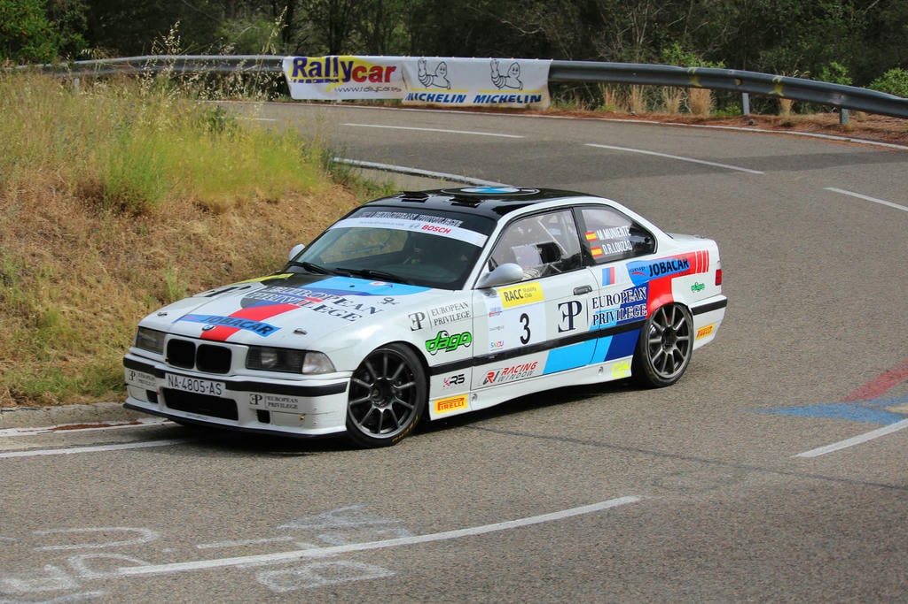
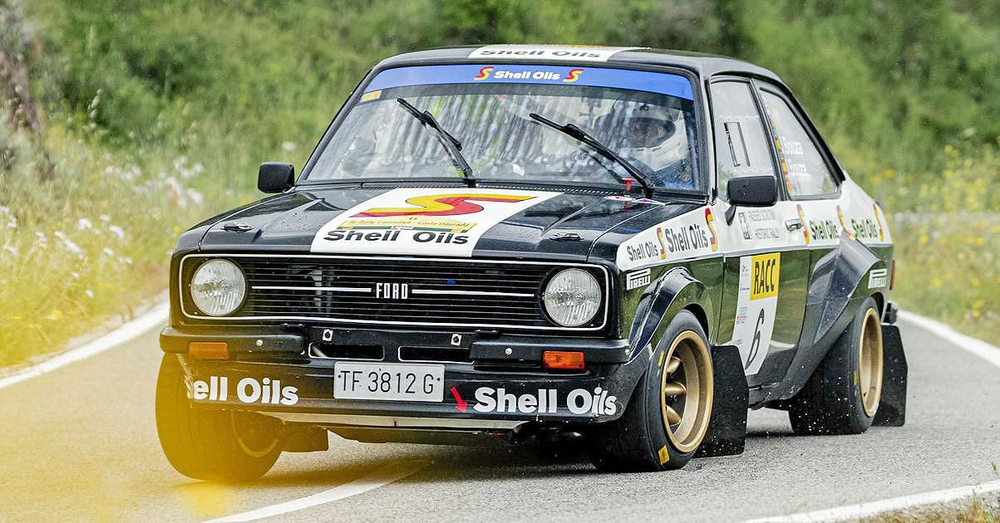
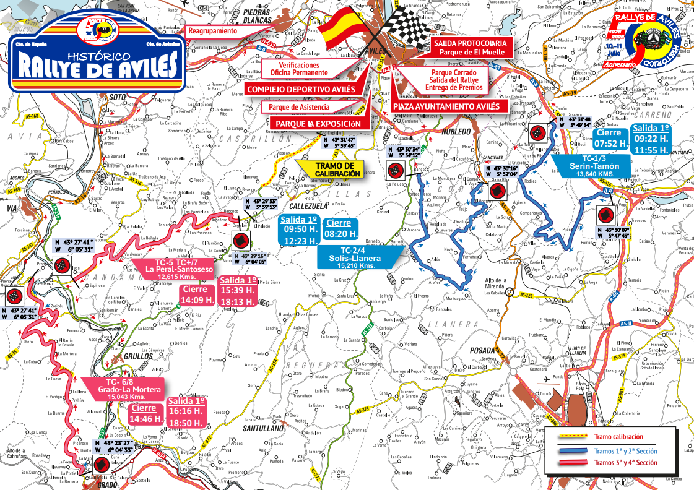

Resumen en vídeo
Los mejores momentos del fin de semana

50 Rallye de Avilés Histórico · 10 y 11 de julio de 2026
Campeonato de España de Rallyes Históricos
El Rallye de Avilés nació de la gran afición al motor que hay en Asturias y se convirtió pronto en una carrera muy conocida del norte de España. Todo esto es posible gracias a la Escudería Avilesina, el club local que organiza la prueba desde el principio con mucho trabajo y dedicación.
Este año el rallye celebra su edición número 50, una fiesta muy especial que reúne a los mejores coches clásicos de carreras del país. Durante el evento, las carreteras de la comarca vuelven a llenarse de ambiente para disfrutar del espectáculo y del sonido de estos vehículos históricos.

Los mejores momentos del fin de semana
El equipo vencedor cuenta cómo fue la carrera.
Escucha la presentación de la edición 2026 con el concejal de Deportes y la Escudería Avilesina.
Ganadores de las ultimas 5 ediciones.
 46ª EdiciónXesús Ferreiro - Javier Anido
46ª EdiciónXesús Ferreiro - Javier Anido


48ª EdiciónJavier - Iván Bouza
49ª EdiciónXesús Ferreiro - Javier Anido 50ª Edición Xesús Ferreiro - Javier Anido
50ª Edición Xesús Ferreiro - Javier Anido
| Hora | Actividad | Lugar |
|---|---|---|
| 10:00 – 13:00 | Entrega de documentación | Escudería Avilesina |
| 16:00 – 19:30 | Verificaciones técnicas | Complejo Deportivo de Avilés |
| 20:00 | Ceremonia de salida | Plaza Pedro Menéndez |
| 20:15 – 21:00 | Parque cerrado | Plaza de España |
| Hora | Actividad | Distancia |
|---|---|---|
| 08:30 | Salida del rallye Plaza de España | – |
| 09:22 | TC1 · Serín-Tamón | 13,640 km |
| 09:50 | TC2 · Solís-Llanera | 15,210 km |
| 10:30 | Reagrupamiento Piedras Blancas | 20 min |
| 11:55 | TC3 · Serín-Tamón | 13,640 km |
| 12:23 | TC4 · Solís-Llanera | 15,210 km |
| 13:03 | Reagrupamiento Piedras Blancas | 20 min |
| 15:39 | TC5 · La Peral-Santoseso | 12,615 km |
| 16:06 | TC6 · Grado-La Mortera | 15,043 km |
| 17:02 | Reagrupamiento Piedras Blancas | 15 min |
| 18:13 | TC7 · La Peral-Santoseso | 12,615 km |
| 18:50 | TC8 · Grado-La Mortera | 15,043 km |
| 19:50 | Final del rallye Plaza de España | – |
| 21:00 | Entrega de trofeos podio | – |
